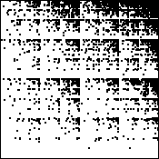
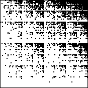
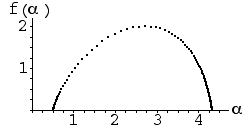
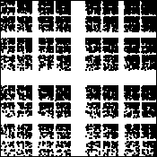
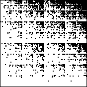

(e)
(e)| 1. Both f(α) curves have a maximum value 2. This is the
dimension of the IFS picture, thus eliminating (c), with dimension about
|
| The points in (d) are more evenly distributed, so the corresponding probabilities are more nearly equal. Consequently, the maximum and minimum values of α are closer together and we see (d) corresponds to (b), (e) to (a). |
| (a)
(b) |
| (c)
(d)
(e) |
Return to Homework 5 Practice.